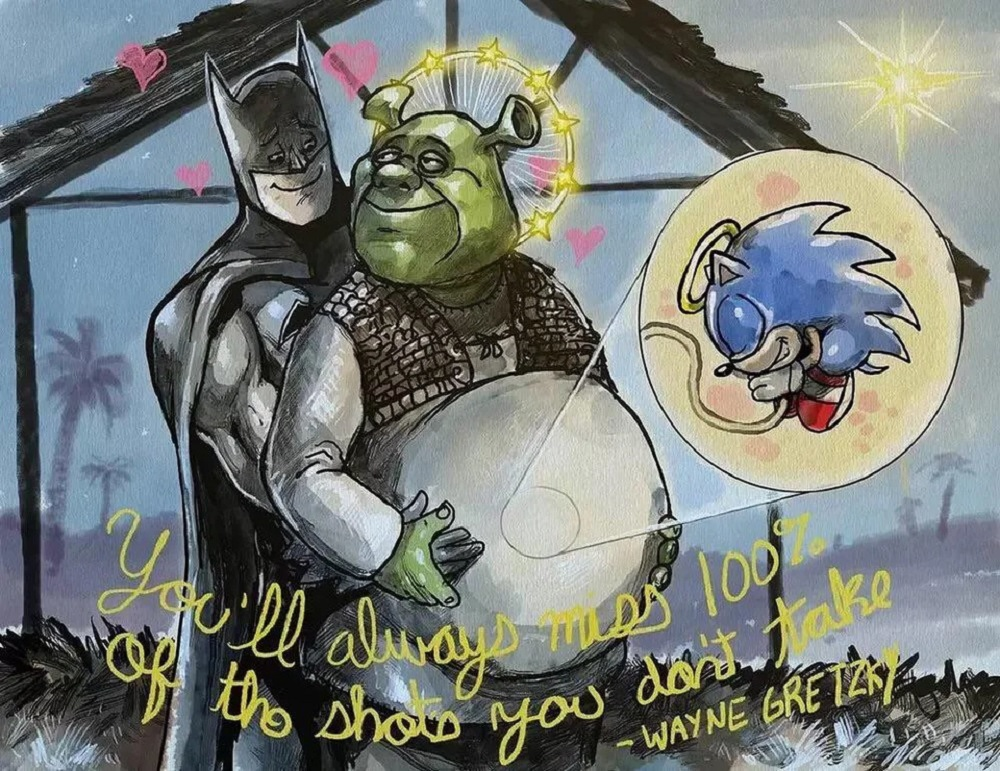

O protagonista de nossas vidas Ogrão Shrek aassim como O Bruxo, Ronaldinho Gaúcho partilha do trono de personagens com Aparições
e cenas Icônicas, nesta página, encontre uma compilação das mesmas.
Cenas Icônicas
Roupa Íntima Feminina
Uma cena bem memorável é a frangada que o Pinóquio dá lá no segundo filme, quando ele e mais uma galera vão resgatar o Shrek, o Burro e o Gato de Botas na prisão.
Cadê a Música?
Uma das cenas mais Icônicas dos filmes é a cena em que Shrek sai de seu banheiro logo no começo do primeiro filme, porém você já viu essa cena sem a música de fundo?
Bem, não sei como, mas a Netflix sabe e ela resolveu compartilhar com a gente através do perfil dela no YouTube:
Memes
Gravidez
Por algum motivo que desconheço, o Shrek foi participante de uma das coisas mais bizarras que já vi por aí na internet, o meme da gravidez
Apesar de ser um pouco perturbador, as pessoas racham o bico de ver memes onde o Shrek está grávido, ou engravidou alguém.
Teorizo que nosso amigão Shrek emite tantos feromônios do acasalamento que ele atrai personagens de até mesmo outros universos cinematográficos para copular com ele.

Eu sou Stefhany
Em primeiro lugar, temos essa participação de se cair o cu da bunda de ninguém mais e ninguém menos que Shrek no clipe de Eu Sou Stefhany (Cross Fox) de Stefhany Absoluta.
Isso mesmo, nosso adorado verdão aparece em uma curta cena, em 0:56, observe: